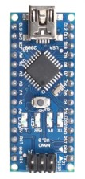
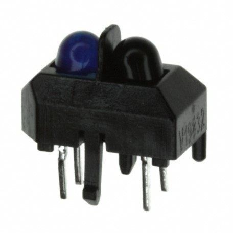
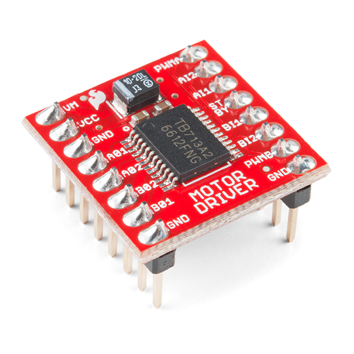
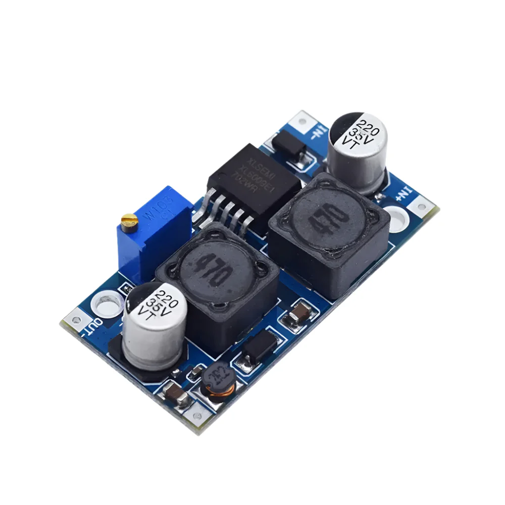
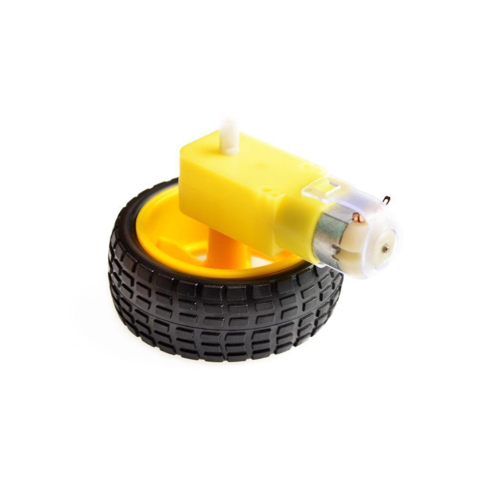

LINE FOLLOWER ROBOT
COMPLETE BUILD GUIDE
🤖 Arduino Nano Based
📟 6 TCRT5000 Sensors
⚡ TB6612FNG Motor Driver
🔧 Step-by-Step Instructions
TABLE OF CONTENTS
1. Introduction & Components ........................ Page 3
2. Circuit Connections ............................. Page 4
3. Hardware Assembly ............................. Page 5
4. Code Explanation .............................. Page 6
5. Sensor Configuration .......................... Page 7
6. Testing & Calibration ......................... Page 8
7. Troubleshooting ............................... Page 9
1. INTRODUCTION & COMPONENTS
Welcome to building your own intelligent line follower robot! 🎉 This robot uses 6 TCRT5000 IR sensors to detect and follow black lines with precision.

Main controller

IR line sensors

Motor driver

Power management

Voltage regulation

Robot movement
2. CIRCUIT CONNECTIONS
Motor Driver (TB6612FNG) Connections:
| TB6612FNG Pin | Arduino Nano Pin | Function |
|---|---|---|
| AIN1 | D7 | Left Motor Forward |
| AIN2 | D8 | Left Motor Backward |
| PWMA | D9 | Left Motor Speed |
| BIN1 | D5 | Right Motor Forward |
| BIN2 | D4 | Right Motor Backward |
| PWMB | D3 | Right Motor Speed |
Sensor Array Connections:
| Sensor Position | Arduino Pin | Description |
|---|---|---|
| Leftmost (S6) | A7 | Far left sensor |
| Left (S5) | A6 | Left sensor |
| Center Left (S4) | A3 | Center left sensor |
| Center Right (S3) | A2 | Center right sensor |
| Right (S2) | A1 | Right sensor |
| Rightmost (S1) | A0 | Far right sensor |
Additional Connections:
• Head Light LED: Pin D13
• Power: Connect boost/buck modules as per your power requirements
3. HARDWARE ASSEMBLY
🔧 Step 1: Chassis Preparation
Mount the Arduino Nano on the robot chassis. Ensure easy access to USB port for programming.
⚡ Step 2: Motor Driver Installation
Install the TB6612FNG motor driver. Connect the motors to motor outputs A and B on the driver board.
👁️ Step 3: Sensor Array Mounting
Mount the 6 TCRT5000 sensors in a straight line at the front of the robot, about 2-5mm above the ground. Spacing should be approximately 10-15mm between sensors.
🔌 Step 4: Power System
Connect boost and buck modules for proper power distribution. The boost module can power motors while buck module provides regulated 5V for Arduino and sensors.
- Keep wires organized and secure
- Test continuity with multimeter
- Ensure sensor array is level
- Leave access to programming port
4. CODE EXPLANATION
Main Setup and Pin Definitions:
#define left_motor_backward 8
#define right_motor_forward 5
#define right_motor_backward 4
#define left_motor_speed 9
#define right_motor_speed 3
#define head_light 13
#define speed_left 10 //left motor speed coeficient
#define speed_right 10//right motor speed coeficient
#define sw 11
char point = 's';
int positional_val;
int sensor_val[6]; //this is for storing analog value of each sensor
int mid[6] = {512, 512, 512, 512, 512, 512}; //this is the mid value for each sensor. use this array if you want to adjust midoint of each sensor individually
int base[6] = {1, 2, 4, 8, 16, 32}; //this is for binary to decimal conversion
int sensor; //this is to store final value after binary conversion
int total = 0; //this is to store the count of detected sensor
void setup() {
pinMode(left_motor_forward, OUTPUT);
pinMode(left_motor_backward, OUTPUT);
pinMode(left_motor_speed, OUTPUT);
pinMode(right_motor_forward, OUTPUT);
pinMode(right_motor_backward, OUTPUT);
pinMode(right_motor_speed, OUTPUT);
pinMode(head_light, OUTPUT);
pinMode(sw, INPUT_PULLUP);
Serial.begin(9600);
}
Button Control System:
The robot uses a sophisticated button system:
- 1 Press: Start line following with LED blink
- 2 Presses: Manual forward movement
byte b = button(); // Read button presses
if (b != 0) {
if (b == 1) {
// Blink LED 3 times before starting
for (int i = 0; i < 3; i++) {
digitalWrite(13, HIGH);
delay(250);
digitalWrite(13, LOW);
delay(250);
}
line_follow(); // Start line following
}
else if (b == 2) {
motor(5 * speed_left, 5 * speed_right);
}
}
}
5. SENSOR CONFIGURATION
Sensor Reading Function:
sensor = 0; // Reset sensor value
total = 0; // Reset total active sensors
for (int i = 0; i < 6; i++) {
// Read analog values from sensors
(i<4) ? sensor_val[i] = analogRead(i) : sensor_val[i] = analogRead(i+2);
// Convert to digital (0 or 1)
(sensor_val[i] > mid[i]) ? sensor_val[i] = 1 : sensor_val[i] = 0;
// Build binary representation
sensor += sensor_val[i] * base[i];
total += sensor_val[i];
}
}
Binary Pattern Recognition:
The code uses binary patterns to determine robot position:
• 0b001100 = Centered on line
• 0b000100 = Slightly right of center
• 0b001000 = Slightly left of center
• 0b000110 = More right correction needed
• 0b011000 = More left correction needed
• 0b111111 = All sensors detect line (intersection/stop)
Calibration Arrays:
int base[6] = {1, 2, 4, 8, 16, 32}; // Binary weights
6. TESTING & CALIBRATION
🧪 Step 1: Basic Connectivity Test
Upload the code and check if:
- LED on pin 13 lights up
- Button responds correctly
- Motors can be controlled
👁️ Step 2: Sensor Calibration
Place robot on your track and check sensor readings using Serial Monitor. Adjust mid[] values if needed:
Serial.println("Sensor readings:");
for(int i=0; i<6; i++){
Serial.print("S");
Serial.print(i);
Serial.print(": ");
Serial.println(sensor_val[i]);
}
🏁 Step 3: Line Following Test
Create a simple test track:
- Straight line (2-3cm wide black tape)
- Gentle curves
- 90-degree turns
- T-intersections
⚙️ Step 4: Speed Tuning
Adjust speed coefficients for optimal performance:
#define speed_right 10 // Adjust for right motor
- Start with lower speeds for initial testing
- Ensure equal motor speeds for straight movement
- Test in consistent lighting conditions
7. TROUBLESHOOTING
🚫 Robot Won't Start
Check:
- Power connections
- Button wiring (pin 11 with pull-up)
- Arduino USB connection for programming
🔄 Robot Goes in Circles
Solutions:
- Check motor connections (swap if needed)
- Adjust speed_left and speed_right values
- Verify motor driver wiring
👁️ Sensors Not Working
Verify:
- Sensor height (2-5mm from ground)
- Analog pin connections (A0,A1,A2,A3,A6,A7)
- Sensor power supply
- Calibration values in mid[] array
⚡ Motors Not Responding
Check:
- TB6612FNG power supply
- Motor driver pin connections
- Motor polarity
- PWM pin functionality
Serial.print("Sensor: ");
Serial.print(sensor, BIN);
Serial.print(" Total: ");
Serial.print(total);
Serial.print(" Point: ");
Serial.println(point);
delay(100);
🎉 Congratulations!
You've successfully built and programmed your line follower robot! This intelligent robot can:
- Follow straight and curved lines
- Handle intersections and turns
- Detect stop conditions
- Navigate complex tracks
Happy Robot Building! 🤖✨